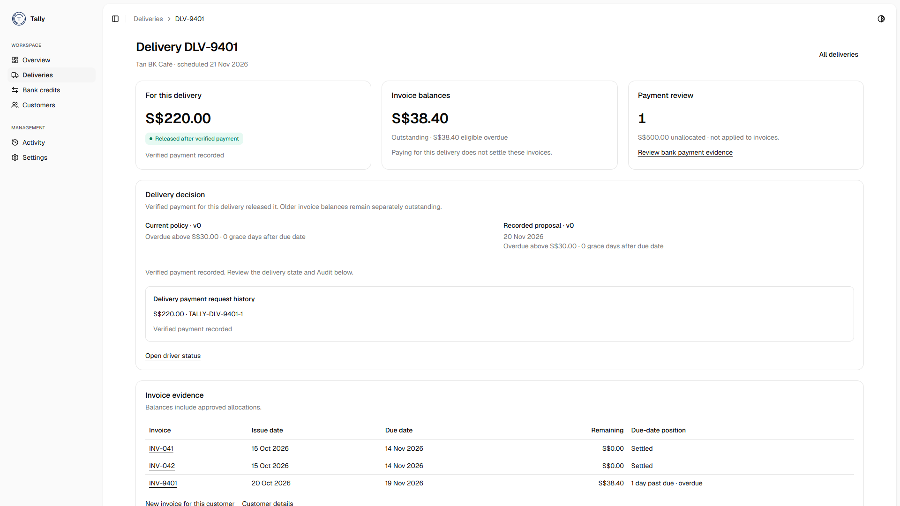

The visual direction
The supplied ASCII grass is the continuous world. A white reading surface becomes a white application frame. Desktop captures keep their complete 16:9 shape. The driver view is an intentional vertical composition. End on the grass with: Can this delivery go out?
Use restrained scale, scroll and emphasis. The article excerpt is attributed to CNA, 16 September 2025.
Fresh footage and verification
Application and provider scenes use new captures from the 20 November run on a newly initialized disposable ledger. No 19 November application or provider screenshot is used in this revision. Native confirmations were accepted and logged; no fake confirmation modal is drawn.
The debt is a separate S$38.40 overdue invoice. The delivery request is S$220 only. The financial workflow passed; capture failures and provider console errors are retained in the verification report.
Preview the revised composition
Open fresh Remotion preview
The preview contains 118.6 seconds of recorded business footage, with 28.6 seconds for release and 10.7 seconds of audit scrolling. Full continuous source takes are playable beside the script below; Studio applies the chapter trims. Read the complete timed script · Voiceover cue timings. The visuals are recut around the complete ElevenLabs v4 Mike narration at its original speed. The 2:19.5 cut follows the natural Mike delivery; paragraph gaps stay under 2.1 seconds, with protected word boundaries at the audio edits. Seven Miles by West & Zander is mixed quietly underneath, with a restrained article opening and a gentle closing lift. This is the public preview recording; publication licensing has not been verified. Superseded exports and experiments are preserved outside this folder in the dated archive.

CNA · supplied screenshot · 16:9 crop
01 0:00.0–0:06.2 · 6.2s
A real supplier problem
Some Singapore food suppliers have waited up to four months to get paid. That's a real problem.
On screen Use the supplied Screenshot (45): original CNA page, cropped to 16:9 over the grass. Keep the complete headline, CNA branding and author/date visible; crop away the scrollbar and excess bottom image.
Capture status User-supplied Screenshot (45), unchanged source pixels. Cropped non-destructively inside a 16:9 frame; original preserved.
Fresh capture · 20 November 2026
05 0:29.5–0:42.5 · 13s
Review and approve the split
Tally suggests five hundred dollars for one invoice, three hundred for the other. It doesn't apply that allocation until I approve it. I review the evidence, approve the split, and now both invoices are settled.
On screen The same recording continues: open the split, read both allocations, approve through the real native confirmation, then navigate to the customer’s two zero-balance invoices.
Capture status New continuous capture from DLV-9401 / INV-9401 on a fresh disposable ledger. Actual UI actions and outcomes; The current cut retimes the recorded navigation around the narration; actions remain chronological. Original recordings and verification are retained in artifacts/demo-continuous-20261120-2216/.
Fresh HitPay sandbox · simulated funds
08 1:04.5–1:15.7 · 11.2s
HitPay sandbox checkout
That approval creates a payment request for this new delivery through HitPay's MCP integration. This is HitPay's actual hosted sandbox checkout, for two hundred and twenty dollars.
On screen Continuous hosted checkout, fictional email entry and provider-generated QR. The same take opens the decoded sandbox simulator and completes payment.
Capture status New continuous capture from DLV-9401 / INV-9401 on a fresh disposable ledger. Actual UI actions and outcomes; The current cut retimes the recorded navigation around the narration; actions remain chronological. Original recordings and verification are retained in artifacts/demo-continuous-20261120-2216/. The provider console-clean check failed on one WebSocket closure message; it is retained, not suppressed. Real HitPay sandbox; simulated funds. Remote completion was independently retrieved through the app’s MCP gateway.
Fresh HitPay sandbox · simulated funds
09 1:15.7–1:32.2 · 16.5s
Complete the test payment
I'll use PayNow. The QR opens HitPay's own sandbox simulator. I complete the test payment here, and there it is: payment successful. The money is simulated, but the checkout, payment record and confirmation come directly from HitPay's sandbox.
On screen The payment recording continues through the real simulator button and success, then returns to HitPay’s actual completed checkout. Loading stays visible only where it helps continuity.
Capture status New continuous capture from DLV-9401 / INV-9401 on a fresh disposable ledger. Actual UI actions and outcomes; The current cut retimes the recorded navigation around the narration; actions remain chronological. Original recordings and verification are retained in artifacts/demo-continuous-20261120-2216/. Real HitPay sandbox; simulated funds. Remote completion was independently retrieved through the app’s MCP gateway.
Fresh capture · 20 November 2026
10 1:32.2–1:47.2 · 15s
Verify payment, then release
Here's the important part: even though HitPay says successful, the delivery is still held. I click Check payment status. Tally verifies the provider record against this specific request. Only then does it release the order.
On screen Hold on the still-held delivery, show the actual status-check click and changed Released state, then follow the driver link. This is the main reveal, not before-and-after screenshots.
Capture status New continuous capture from DLV-9401 / INV-9401 on a fresh disposable ledger. Actual UI actions and outcomes; The current cut retimes the recorded navigation around the narration; actions remain chronological. Original recordings and verification are retained in artifacts/demo-continuous-20261120-2216/.
Fresh capture · 20 November 2026
12 2:00.8–2:11.5 · 10.7s
Approval and release history
Every approval and release is recorded. We checked the payment twice and restarted Tally: one receipt, the same released delivery, and the old debt still outstanding.
On screen Type the delivery reference, read its events, clear the filter and scroll through the real history. End after 12 seconds.
Capture status New continuous capture from DLV-9401 / INV-9401 on a fresh disposable ledger. Actual UI actions and outcomes; The current cut retimes the recorded navigation around the narration; actions remain chronological. Original recordings and verification are retained in artifacts/demo-continuous-20261120-2216/.